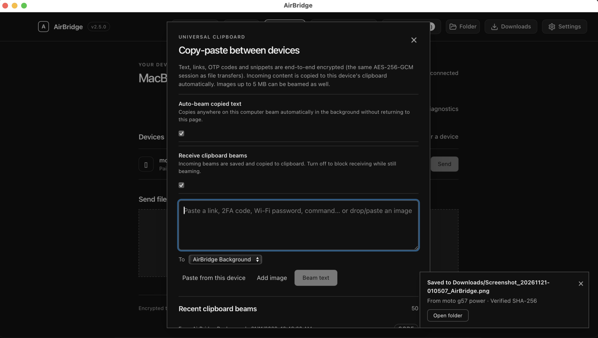

GUIDE OPEN SOURCE
Looking for an open-source AirDrop alternative? Start with the licence
Open source matters most where it is least convenient: the pairing protocol, the encryption, the update path, and the licence that governs whether you may use it at work. Here is what AirBridge publishes, what you can verify yourself, and what the licence actually says.

AirBridge’s source and licence
The full source is public on GitHub: the TypeScript server, the React client, the Kotlin Android app and engine, the Swift menu-bar shell, the CLI, the installers and the release workflows. Anyone can read the pairing protocol, the AES-GCM framing and the TLS pinning code, and run the test suite.
The licence is not an OSI-approved licence. AirBridge uses a Fair-Use & Non-Commercial licence: free for personal, non-commercial use on your own devices, with commercial or organisational use requiring prior written consent from the author. If your definition of open source requires OSI approval, this project does not meet it — LICENSE is short and worth reading before you rely on it.
Why the source being public matters for a transfer tool
- You can check the cryptography instead of trusting a badge. SPAKE2 (RFC 9382) pairing, HKDF key derivation, AES-256-GCM chunk and frame encryption, SHA-256 pre-publication checks and the SAS verification flow are all in the repository.
- You can see what is not collected. The Android app ships no advertising or analytics SDK, and the desktop diagnostics are scrubbed, bounded and only shared when you click.
- You can self-host the fallback. When a direct path is impossible, the relay is
airbridge relay— run it on a box you control, and it still only ever sees ciphertext. - You can build the binaries yourself from the same workflow definitions that produce the release artefacts, and compare checksums or Sigstore attestations.
- You are not locked in. Pairing state, files and clipboard history live on your devices.
Where AirBridge sits among open-source transfer tools
There is no single winner; the right tool depends on the devices in front of you.
- LocalSend is MIT-licensed, cross-platform and wonderfully simple. If you only need to move files between devices that all run LocalSend, and a permissive licence matters to you or your employer, it is an excellent choice.
- KDE Connect is GPL-licensed and deeply integrated with KDE Plasma, including notification mirroring and remote input. On a Plasma desktop it is hard to beat; AirBridge focuses on Android ↔ macOS/Windows/Linux with its own encrypted pairing protocol.
- PairDrop / Snapdrop-style browser tools need no installation at all, which is their strength — and their limit, since a browser tab cannot own a background session, a native clipboard or a system screen capture.
- AirBridge targets the case where an Android phone and a Mac, Windows PC or Linux box must exchange multi-gigabyte files, clipboard items, a screen view, contacts and calls inside one verified session — with a CLI and daemon for automation.
The full side-by-side, including commercial options, is on the comparison page.
How to verify a download
Every release publishes SHA256SUMS.txt and keyless Sigstore build-provenance attestations. The desktop installer and self-updater enforce the checksums before installing anything.
gh attestation verify AirBridge-linux-x64 -R DigantaDey/AirBridgeThe release page also lists the per-platform assets: AirBridge-macOS-arm64.zip, AirBridge-macOS-x64.zip, AirBridge-windows-x64.exe, AirBridge-windows-arm64.exe, AirBridge-linux-x64, AirBridge-linux-arm64 and their musl variants, plus AirBridge-android-debug.apk.
Contributing back
Bug reports, device-specific findings and documentation fixes are genuinely useful — especially reports from OEM Android builds, because background behaviour varies. Start with CONTRIBUTING.md, follow the code of conduct, and use the issue templates so a report includes the version and platform details that make it actionable.
Security issues should not be filed publicly: the process is in SECURITY.md.
Questions about this guide
Is AirBridge OSI-approved open source?
No. The source is public, but the licence is a Fair-Use & Non-Commercial licence rather than an OSI-approved one. Personal use is free; commercial or organisational use needs written consent from the author.
Can I use AirBridge at work?
Commercial, corporate or monetised use requires prior written consent from the author, per LICENSE. For personal devices the software is free.
Can I self-host the relay?
Yes. airbridge relay --listen 0.0.0.0:47391 runs the relay on hardware you control, and computers can point at it with airbridge --relay. The relay forwards ciphertext; it does not receive session keys.
Has the code been independently audited?
No third-party audit is claimed. The project publishes its own threat model and audit notes in SECURITY.md, and the cryptography is implemented with audited primitives (@noble/curves, @noble/hashes) inside readable TypeScript and Kotlin.
Can I fork it and publish my own build?
The licence governs redistribution, and commercial use needs written consent. For personal experiments, the repository is complete: server, clients, Android app, installers and release workflows are all included.